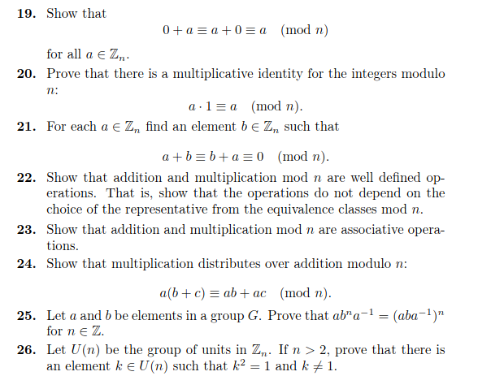
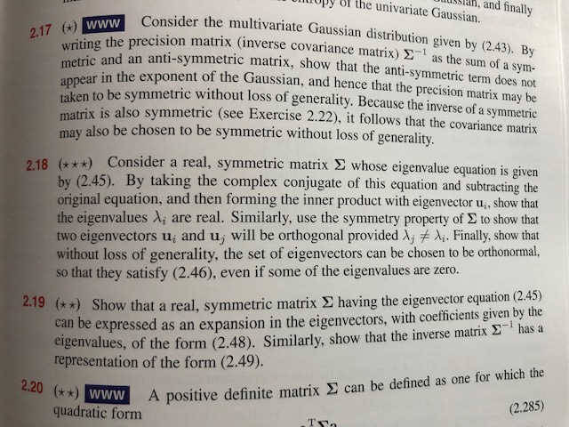

Analysis
Analysis is Calculus done right. It starts with a careful definition of the real numbers and builds up the theory of derivatives and integrals, proving everything as you go.

from Intro to Real Analysis by Trench.
Analysis is Calculus done right. It starts with a careful definition of the real numbers and builds up the theory of derivatives and integrals, proving everything as you go.
from Intro to Real Analysis by Trench.
Algebra is the study of abstract algebraic systems such as groups and rings. Here one starts with basic algebraic properties and uncovers deeper structure. Linear Algebra is one part of algebra, and the upper division linear algebra course redoes the results from Linear Algebra from an abstract point of view.

from Abstract Algebra: Theory and Applications by Judson.
The language of theorems and proofs is fundamental to advanced work in many of the more theoretical areas of the mathematical sciences including computer science and statistics. Here are some problems from a famous book on Machine Learning.

from Pattern Recognition and Machine Learning by Bishop